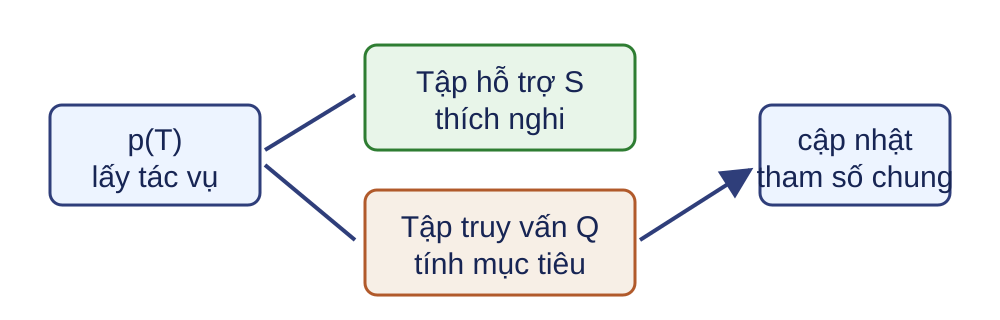
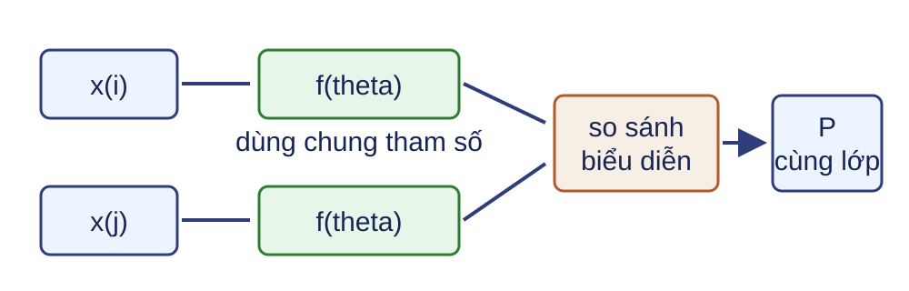
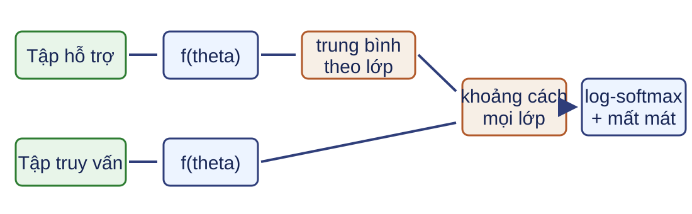

Siêu học tập Bài 14 · Học sâu Học qua nhiều tác vụ để thích nghi với một tác vụ mới từ ít mẫu có nhãn.
Siêu học tập (meta-learning) tối ưu quy trình học qua một phân phối tác vụ. Lượt tác vụ G giữ nguyên dữ liệu khi so sánh Siamese, ProtoNet và MAML.Nguồn: DOCX, Buổi 14; CS330 optimization, PDF 4–8.
Kết quả học tập LLO28 Trình bày động lực và mục tiêu của siêu học tập.
LLO29 Mô tả Siamese, ProtoNet và MAML theo dữ liệu, thích nghi và dự đoán.
Tiên quyết: phân phối, gradient, quy tắc chuỗi, softmax ổn định và chia dữ liệu huấn luyện–kiểm định–kiểm tra.
Sản phẩm gồm một lượt tác vụ hợp lệ, một mất mát ProtoNet, một cập nhật vòng trong và mục tiêu vòng ngoài của MAML. Tích Hessian–vector không còn là tiên quyết.Nguồn: DOCX, Buổi 14.
Một lớp mới chỉ có một mẫu có nhãn Tình huống nguồn: năm lớp ảnh mới, mỗi lớp chỉ có một ảnh hỗ trợ; mô hình phải phân loại các ảnh truy vấn.
Câu hỏi: Huấn luyện một bộ phân loại mới từ đầu có đủ dữ liệu không?
Không. Ta cần kiến thức học từ nhiều tác vụ trước đó để thích nghi nhanh.
Bài toán có 5 lớp, mỗi lớp 1 mẫu hỗ trợ. Nguồn không cung cấp số liệu đánh giá cho tình huống này.Nguồn: CS330 optimization, PDF 5.
Học ít mẫu là điều kiện, siêu học tập là chiến lược Trong một tác vụ $(x,y)\sim p_\mathcal T(x,y)$.
Qua nhiều tác vụ $\mathcal T\sim p(\mathcal T)$.
Học chuyển giao thường thích nghi sau tiền huấn luyện; siêu học tập đưa chất lượng sau thích nghi vào mục tiêu huấn luyện.
Không đồng nhất mọi phương pháp học ít mẫu với siêu học tập. Điểm phân biệt ở đây là mục tiêu huấn luyện có đo chất lượng sau bước thích nghi hay không.Nguồn: CS330 optimization, PDF 4–6; Berkeley L20, PDF 4–5.
Mỗi lượt tác vụ có tập hỗ trợ và tập truy vấn 
$S_i\cap Q_i=\varnothing$ theo mẫu; cả hai được lấy từ cùng tác vụ $\mathcal T_i$.
Lượt tác vụ là đơn vị huấn luyện mô phỏng điều kiện ít mẫu khi đánh giá tác vụ mới. Nhãn truy vấn không đi vào bước thích nghi.Nguồn: CS330 metric, PDF 4–8; homework, PDF 1–3.
N lớp, K mẫu khóa số mẫu trong lượt tác vụ $N$: số lớp; $K$: số mẫu hỗ trợ mỗi lớp; $R$: số mẫu truy vấn mỗi lớp.
Nhãn trong mỗi lượt tác vụ được đánh lại cục bộ từ 0 đến $N-1$; có $NK$ mẫu hỗ trợ và $NR$ mẫu truy vấn.
Ký hiệu $R$ biểu thị số truy vấn mỗi lớp, còn $Q_i$ là tập truy vấn của tác vụ $i$. Nhãn cục bộ không thay thế nhãn lớp toàn cục trong bước lấy mẫu tác vụ.Nguồn: homework, PDF 1–3; ký hiệu được làm rõ.
Hợp đồng kích thước giữ trục tác vụ và lớp $X^S:[B,N,K,D_x],\quad X^Q:[B,N,R,D_x]$
$Y^S:[B,N,K]$, $Y^Q:[B,N,R]$; chỉ làm phẳng thành $BNK$ hoặc $BNR$ sau khi đã giữ đúng trục.
B là số tác vụ trong một lô. Không trộn mẫu hỗ trợ giữa hai tác vụ khi tạo prototype hoặc cập nhật vòng trong.Nguồn: homework, PDF 1–4; kích thước được làm rõ.
Cách chia tác vụ phụ thuộc câu hỏi đánh giá Mục tiêu Thành phần tách biệt Chuyển sang lớp mới lớp huấn luyện và kiểm tra Chuyển miền miền dữ liệu Họ hồi quy các tác vụ được lấy mẫu
Tác vụ kiểm định chọn siêu tham số; tác vụ kiểm tra chỉ dùng để đánh giá cuối.
Bên trong mỗi tác vụ vẫn tách hỗ trợ và truy vấn. Yêu cầu tách biệt lớp giữa huấn luyện và kiểm tra chỉ áp dụng khi mục tiêu là chuyển sang lớp mới.Nguồn: CS330 optimization, PDF 4–10; homework, PDF 1–3.
Ví dụ G có hai lớp, mỗi lớp hai mẫu hỗ trợ Lớp cục bộ Biểu diễn hỗ trợ Biểu diễn truy vấn A = 0 0, 2 2.5 B = 1 4, 6 4.5
G tự dựng để truy vết ba phương pháp; các số là biểu diễn một chiều cho sẵn.
G là ví dụ số tự dựng, không phải kết quả thực nghiệm. Cùng tập hỗ trợ và tập truy vấn này tạo cặp Siamese, prototype và cập nhật vòng trong MAML.Nguồn: công thức từ homework, PDF 1–4; ví dụ tự dựng.
Mục tiêu chung đo sau phép thích nghi $$\min_\theta\ \mathbb E_{\mathcal T,S,Q}\left[\mathcal L^Q_\mathcal T(A_\theta(S))\right],\quad \mathcal T\sim p(\mathcal T),\ (S,Q)\sim\mathcal T.$$
ProtoNet: $A_\theta$ tạo prototype. MAML: $A_\theta$ tạo tham số thích nghi. Siamese là bộ xác minh cặp; nếu thiếu luật tổng hợp, nó chưa tạo trạng thái thích nghi N-way và không bị ép vào $A_\theta$.
Kỳ vọng bao gồm lấy mẫu tác vụ và hai tập rời nhau trong lượt tác vụ. Mất mát truy vấn được trung bình trong từng tác vụ rồi qua tác vụ. Công thức là khung chung cho các phương pháp có trạng thái sau hỗ trợ; Siamese được đối chiếu bằng mất mát cặp và cần thêm luật tổng hợp để thành dự đoán N-way.Nguồn: CS330 optimization, PDF 6–12; metric, PDF 4–8.
Kiểm tra hợp đồng lượt tác vụ Câu hỏi: Với $B=3,N=2,K=2,R=1$, $X^S$ và $X^Q$ chứa bao nhiêu mẫu?
12 mẫu hỗ trợ và 6 mẫu truy vấn; mỗi tác vụ vẫn được xử lý riêng.
$BNK=12$ và $BNR=6$; hai phép đếm vẫn giữ riêng trục tác vụ.Nguồn: homework, PDF 1–3.
G tạo cặp cùng lớp và khác lớp Cùng lớp: $(2.5,2)$, $z=1$.
Khác lớp: $(2.5,4)$, $z=0$.
Siamese học xác suất hai mẫu thuộc cùng lớp.
Truy vấn A của G ghép với hai mẫu hỗ trợ để tạo một cặp cùng lớp và một cặp khác lớp.Nguồn: CS330 metric, PDF 8–12; episode G tự dựng.
Hai nhánh Siamese dùng chung tham số 
Hai đầu vào đi qua cùng bộ mã hóa $f_\theta$ trước khi so sánh.
Mạng Siamese dùng chung bộ mã hóa cho hai nhánh. Hàm so sánh có thể học được hoặc dựa trên khoảng cách theo thiết kế nguồn.Nguồn: CS330 metric, PDF 8–12.
Entropy chéo nhị phân lấy trung bình theo lô cặp $$\mathcal L_{pair}=\frac1{B_p}\sum_{b=1}^{B_p}\left[-z_b\log p_b-(1-z_b)\log(1-p_b)\right].$$
$p_b=\sigma(s_b)=P(z_b=1\mid x_i,x_j)$; triển khai ổn định tính mất mát trực tiếp từ điểm chưa chuẩn hóa $s_b$.
Quy ước $z=1$ biểu thị cặp cùng lớp. $B_p$ là số cặp, khác $B$ là số tác vụ. Quan hệ $p_b=\sigma(s_b)$ nối xác suất với điểm đầu vào của dạng BCE ổn định.Nguồn: CS330 metric, PDF 8–12; quy ước và phép lấy trung bình được làm rõ.
Siamese là bộ xác minh cặp Độ chính xác cặp không tự trở thành độ chính xác phân loại N-way.
Muốn dự đoán N-way phải xác định thêm quy tắc tổng hợp điểm theo lớp.
Số cặp khác lớp thường lớn hơn số cặp cùng lớp, nên giao thức cần nêu cách lấy mẫu cặp. Một đại diện cho mỗi lớp tránh phải tổng hợp nhiều điểm cặp.Nguồn: CS330 metric, PDF 10–14.
Kiểm tra Siamese trên G Câu hỏi: Cặp $(2.5,2)$ có $z$ bằng bao nhiêu? Nếu xác suất cùng lớp tăng từ .6 lên .9, mất mát cặp tăng hay giảm?
$z=1$; mất mát giảm từ $-\log .6$ xuống $-\log .9$.
Hai mẫu thuộc cùng lớp A nên $z=1$; xác suất đúng tăng làm entropy chéo giảm.Nguồn: CS330 metric, PDF 8–12; lượt tác vụ G tự dựng.
ProtoNet dùng một đại diện cho mỗi lớp Prototype là trung bình biểu diễn nhúng của các mẫu hỗ trợ cùng lớp.
Bộ xác minh cặp phải so truy vấn với nhiều mẫu tham chiếu; một đại diện mỗi lớp rút gọn phép so sánh.
Mạng nguyên mẫu (Prototypical Network, ProtoNet) dùng cùng cấu trúc N-way khi huấn luyện và kiểm tra. Mỗi lớp được thay bằng một đại diện; nguồn không cung cấp số liệu định lượng về chi phí.Nguồn: CS330 metric, PDF 13–17; homework, PDF 2–4.
Bộ mã hóa tạo không gian so sánh $Z^S=f_\theta(X^S):[B,N,K,D],\quad Z^Q=f_\theta(X^Q):[B,N,R,D]$
Trong G, $D=1$ và biểu diễn đã được cho sẵn để tập trung vào thuật toán.
Trong huấn luyện, gradient từ mất mát truy vấn cập nhật bộ mã hóa qua cả biểu diễn truy vấn và prototype hỗ trợ.Nguồn: CS330 metric, PDF 13–17.
Đại diện nguyên mẫu lấy trung bình theo trục K $C_{b,n,:}=\frac1K\sum_{k=1}^{K}Z^S_{b,n,k,:},\qquad C:[B,N,D]$
Tập truy vấn không tham gia phép trung bình này.
Nhãn cục bộ 0 đến N-1 xác định trục lớp. Không lấy trung bình qua N hoặc qua B.Nguồn: homework, PDF 2–4; shape được làm rõ.
G tạo hai đại diện nguyên mẫu Câu hỏi: Trung bình hỗ trợ A $(0,2)$ và B $(4,6)$ bằng bao nhiêu?
$c_A=1$, $c_B=5$.
Phép trung bình chỉ chạy theo trục $K=2$ trong từng lớp của G, nên $c_A=1$ và $c_B=5$.Nguồn: homework, PDF 2–4; lượt tác vụ G tự dựng.
Phép phát tán giữ đúng các trục $[B,NR,1,D]-[B,1,N,D]\rightarrow[B,NR,N,D]$
Cộng bình phương theo trục D tạo khoảng cách $d:[B,NR,N]$; điểm chưa chuẩn hóa là $\ell=-d$.
Làm phẳng N và R chỉ ở trục truy vấn. Không làm mất trục lớp của prototype.Nguồn: homework, PDF 2–4; broadcasting được làm rõ.
G cho khoảng cách tới mọi lớp Câu hỏi: Truy vấn A = 2.5 cách $c_A=1$ và $c_B=5$ bao nhiêu theo bình phương?
$d_A=2.25$, $d_B=6.25$; điểm là $(-2.25,-6.25)$.
Tính mọi lớp vì chuẩn hóa xác suất cần toàn bộ điểm.Nguồn: homework, PDF 2–4; lượt tác vụ G tự tính.
Chuẩn hóa log-softmax theo trục lớp $\log P=\operatorname{logsoftmax}_{N}(\ell),\qquad \log P:[B,NR,N]$
Chỉ số $N$ chỉ trục lớp; phép trừ cực đại trong log-softmax giữ ổn định số.
Không chuẩn hóa qua truy vấn hoặc qua tác vụ. Mỗi hàng truy vấn có một phân phối N lớp.Nguồn: homework, PDF 2–4; ổn định số được làm rõ.
Mất mát log âm lấy hai mức trung bình Mất mát log âm (NLL) lấy theo nhãn cục bộ trên trục lớp; trung bình truy vấn trong từng tác vụ, rồi trung bình B tác vụ.
G: $p(A\mid2.5)\approx.9820$, $p(B\mid4.5)\approx.999994$. Tính mất mát trung bình.
$\mathcal L_G\approx[-\log(.9820)-\log(.999994)]/2\approx.00908$.
NLL lấy phần tử log-softmax theo nhãn, không tính log sau một softmax kém ổn định. Hai mức trung bình ngăn tác vụ nhiều truy vấn tự động có trọng số lớn hơn.Nguồn: homework, PDF 2–4; phép lấy trung bình được làm rõ.
Đạo hàm đi qua hỗ trợ và truy vấn 
Không ngắt đường đạo hàm tại prototype trong quá trình siêu học tập. Bộ mã hóa dùng chung cho hỗ trợ và truy vấn.Nguồn: CS330 metric, PDF 13–17; homework, PDF 2–4.
Kiểm tra rò rỉ trong G Câu hỏi: Nếu truy vấn A được đưa vào trung bình tạo $c_A$, hợp đồng nào bị phá?
Nhãn truy vấn đã đi vào bước thích nghi; tập hỗ trợ và truy vấn bị rò rỉ.
Cập nhật vòng trong của MAML cũng tuân theo ranh giới này: chỉ tập hỗ trợ được dùng để thích nghi.Nguồn: homework, PDF 2–4.
Hai họ khác nhau ở trạng thái sau thích nghi ProtoNet MAML Đầu ra $A_\theta(S)$ prototype $C$ tham số $\phi$ Dự đoán truy vấn khoảng cách bộ phân loại $f_\phi$ Tham số chung bộ mã hóa $\theta$ khởi tạo $\theta$
Cả hai tối ưu mất mát truy vấn qua nhiều tác vụ. Trên G, ProtoNet tạo $(c_A,c_B)$ còn MAML tạo tham số thích nghi $\phi$.Nguồn: CS330 metric, PDF 4–17; optimization, PDF 4–14.
MAML học một khởi tạo dễ thích nghi Siêu học tập bất khả tri mô hình (MAML) dùng tập hỗ trợ để cập nhật tham số cho từng tác vụ; tập truy vấn đánh giá tham số sau cập nhật.
MAML không khóa kiến trúc, nhưng phép thích nghi gradient cần mô hình và mất mát khả vi theo tham số.
Siêu học tập bất khả tri mô hình (Model-Agnostic Meta-Learning, MAML) học khởi tạo theta. “Bất khả tri mô hình” không có nghĩa dùng được với phép thích nghi không khả vi.Nguồn: CS330 optimization, PDF 10–18; Berkeley L20, PDF 18–23.
G dùng một bộ phân loại khả vi $P_\phi(B\mid h)=\sigma(w(h-3)+b),\qquad \phi=(w,b)$
Nhãn A = 0, B = 1; khởi tạo chung $\theta=(0,0)$; tốc độ vòng trong $\alpha=1$.
Phép dịch biểu diễn quanh 3 tạo đạo hàm đối xứng và dễ kiểm. Hai tập hỗ trợ–truy vấn vẫn giữ đúng hợp đồng của lượt tác vụ G.Nguồn: công thức MAML từ CS330 optimization, PDF 10–18; bộ phân loại G tự dựng.
Tập hỗ trợ G tạo đạo hàm vòng trong Với bốn hỗ trợ $h=(0,2,4,6)$ và nhãn $(0,0,1,1)$, tại $\theta=(0,0)$:
Câu hỏi: Đạo hàm trung bình theo $(w,b)$ bằng bao nhiêu?
$\nabla_\theta\mathcal L_S=(-1,0)$.
Tại $w=b=0$, mọi xác suất bằng $0.5$. Bốn hạng $(p-y)(h-3)$ là $-1.5,-0.5,-0.5,-1.5$; trung bình bằng $-1$.Nguồn: CS330 optimization, PDF 12–18; lượt tác vụ G tự tính.
Một bước vòng trong tạo tham số thích nghi $\phi=\theta-\alpha\nabla_\theta\mathcal L_S(\theta)$
G: $\theta=(0,0)$, $\alpha=1$, gradient $(-1,0)$. Tính $\phi$.
$\phi=(1,0)$.
Chỉ tập hỗ trợ tham gia cập nhật. Phi là tham số tạm thời của từng tác vụ; không sửa theta tại chỗ.Nguồn: CS330 optimization, PDF 12–18.
Tập truy vấn G đo tham số sau thích nghi Với $\phi=(1,0)$: truy vấn A = 2.5 cho $P(A)\approx.6225$; truy vấn B = 4.5 cho $P(B)\approx.8176$.
Câu hỏi: Hai dự đoán có đúng lớp không?
Đúng; mất mát truy vấn trung bình xấp xỉ $.3377$.
Mất mát $\mathcal L_Q(\phi)$ lấy trung bình hai truy vấn. Nhãn truy vấn tạo tín hiệu vòng ngoài, không tham gia vòng trong.Nguồn: CS330 optimization, PDF 12–18; lượt tác vụ G tự tính.
G cho ba trạng thái sau tập hỗ trợ Siamese ProtoNet MAML Dữ liệu hỗ trợ tập tham chiếu theo cặp mẫu theo lớp mẫu và nhãn Trạng thái sau hỗ trợ $\theta$ không đổi prototype $(1,5)$ $\phi=(1,0)$ Dự đoán điểm cặp softmax khoảng cách $f_\phi$
Đạo hàm và chi phí kiểm tra khác nhau Siamese ProtoNet MAML Tham số học chung bộ mã hóa + so sánh bộ mã hóa $\theta$ khởi tạo $\theta$ Chi phí trên G mới mã hóa nhiều cặp mã hóa + trung bình + khoảng cách lan truyền xuôi–ngược trên hỗ trợ + lan truyền xuôi trên truy vấn
Không có họ nào luôn tốt hơn; lựa chọn phụ thuộc cấu trúc tác vụ và ngân sách thích nghi.
Đạo hàm Siamese đến từ mất mát cặp; ProtoNet từ NLL truy vấn qua prototype; MAML từ mất mát truy vấn qua cập nhật vòng trong.Nguồn: CS330 metric, PDF 8–17; optimization, PDF 10–24.
Kiểm tra quyết định trên ví dụ G Câu hỏi: Phương pháp nào tạo prototype, phương pháp nào cập nhật tham số, và phương pháp nào chỉ cho điểm cặp nếu chưa thêm quy tắc N lớp?
ProtoNet tạo prototype; MAML tạo $\phi$; Siamese là bộ xác minh cặp.
Học ít mẫu khác gợi ý ít mẫu Siêu học tập ít mẫu Gợi ý ít mẫu Dữ liệu thích nghi tập hỗ trợ có nhãn ví dụ trong ngữ cảnh đầu vào Tham số có thể cập nhật hoặc tạo prototype thường không cập nhật trọng số
Gợi ý ít mẫu thay đổi ngữ cảnh đầu vào, còn siêu học tập dùng dữ liệu hỗ trợ để tạo trạng thái thích nghi.Nguồn: giáo trình, PDF 288–293.
Số mẫu hỗ trợ có thể đổi khi kiểm tra Câu hỏi: Mô hình huấn luyện với 1 mẫu có được bảo đảm cải thiện khi kiểm tra với 8 mẫu không?
Không. Cấu trúc lượt tác vụ đã đổi; phải đánh giá theo từng K và giữ nguyên phép chia tác vụ.
Nguồn bài tập yêu cầu khảo sát khi $K$ thay đổi nhưng không cung cấp kết quả thực nghiệm.Nguồn: homework, PDF 8–9.
Ví dụ I tách MAML chính xác và bậc nhất Phép truy vết phụ: $f_\theta(x)=\theta x$, hỗ trợ $(1,2)$, truy vấn $(2,4)$, $\theta=0$, $\alpha=.5$; đây không phải bài toán so sánh chính G.
$\nabla\mathcal L_S=-2$, $H_S=1$, $\phi=1$, $\nabla_\phi\mathcal L_Q=-4$.
Chính xác: $(1-.5\cdot1)(-4)=-2$.
FO: $\partial\phi/\partial\theta\approx I$, nên $-4$.
Nhiều bước vòng trong cần giữ đồ thị và giá trị trung gian để tính tích Hessian–vector (HVP); bộ nhớ phụ thuộc cách lưu mốc.
FO-MAML bỏ hạng Hessian nhưng giữ gradient truy vấn. Tích Hessian–vector không cần ma trận Hessian đầy đủ. Nhiều bước vòng trong làm đồ thị tính toán sâu hơn; bộ nhớ còn phụ thuộc cách lưu mốc.Nguồn: CS330 optimization, PDF 18–24; ví dụ I tự dựng.
Vùng địa lý mới là một tác vụ mới Trong bài toán lớp phủ đất, mỗi vùng địa lý là một tác vụ; vùng mới chỉ có ít dữ liệu hỗ trợ để phân loại hoặc phân đoạn ảnh vệ tinh.
Câu hỏi: Đâu là tác vụ, tập hỗ trợ và tập truy vấn trong cách đóng khung này?
Tác vụ là vùng; hỗ trợ là dữ liệu ít mẫu có nhãn của vùng mới; truy vấn là ảnh còn lại dùng để đánh giá.
Dải nguồn so sánh khởi tạo ngẫu nhiên, tiền huấn luyện và MAML nhưng không cung cấp đủ giao thức để kết luận về hiệu năng. SEN12MS có siêu dữ liệu địa lý; DeepGlobe cần suy đoán vùng bằng phân cụm theo nguồn.Nguồn: CS330 optimization, PDF 26–31.